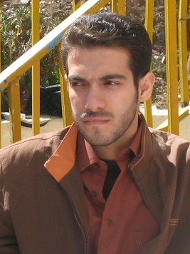

|
|

گلاله بهرامی: کاوه تا آخرین لحظات پیش از بازداشت پی گیر فعالیتهای حقوق بشری اش بود
چهار شنبه14 بهمن 1388
گفتگو با گلاله بهرامی از فعالان کمپین یک میلیون امضاء در کرمانشاه درباره چگونگی بازداشت کاوه قاسمی کرمانشاهی
تغییر برای برابری - کاوه قاسمی کرمانشاهی روزنامه نگار، از فعالان پرکار حقوق بشر و سخنگوی سازمان دیده بان حقوق بشر کردستان است. او همچنین از اعضای کمپین یک میلیون امضا در کرمانشاه، عضو انجمن ژیار که جلوی کار آن گرفته شد و نیز از اعضای سازمان ادوار تحکیم وحدت است. او صبح 4 شنبه ،14 بهمن ماه، در منزل خود بازداشت شد .در این رابطه گفتگوی خبری کوتاهی داشتیم با گلاله بهرامی ، از فعالان حقوق زنان و از اعضای کمپین یک میلیون امضاء برای تغییر قوانین تبعیض آمیز در کرمانشاه و چگونگی بازداشت کاوه قاسمی و وضعیت او پس از بازداشت را از گلاله بهرامی جویا شدیم که آن را در پی می خوانید.
-کاوه چه ساعتی و چه طور بازداشت شد؟
صبح چهارشنبه 7 نفر مسلح با نشان دادن کلتهای کمریشان ساعت 7.45 صبح وارد منزل کاوه می شوند.کاوه خواب بوده و فقط پدرش در منزل حضور داشته است. تا ساعت 11 در منزل کاوه بودند و خانه را کاملا تفتیش کردند و تمام وسایل شخصی کاوه مثل لب تاب، کیس، مجلات، کتابها و حتی شناسنامه و پاسپورت و برخی از رسانه های داخل منزل را نیز با خود بردند و کل اتاقش را بهم ریختند.
-برخوردها هنگام بازداشت چطور بود با کاوه؟آیا حکم برای بازداشتش داشتند؟
پدرش میگوید برخوردشان محترمانه بوده است. کاوه را بردند توی اتاقش و نگذاشتند پدرش برود داخل اتاق . پدرش اما خیلی بی تابی کرده و گریه می کرده و تحت آن شرایط هم میگفت که حتی کاوه میامد و تسلایش میداد و مدام میگفت اگر من هم بروم یکی هستم مثل این همه که برده اند و ناراحت نباش و از این حرفها خلاصه... در باره حکم هم پدرش میگوید که حکم داشتند ولی متاسفانه نمی داند آن افراد از طرف چه جایی به منزل آقای قاسمی آمده بودند و حکم را نتوانسته به دقت ببیند.
-آیا در روزهای اخیر مشکلی از این بابت برایش پیش آمده بود؟
نه مشکل خاصی از این بابتها نبوده. کاوه تا آخرین لحطات پیش از بازداشتش هم پی گیر فعالیتهای حقوق بشری اش بود. دغدغه او تنها حقوق بشر بود و حتی دیشب هم تازه از سنندج برگشته بود و برای دیدار از خانواده های زندانیانی چون مختار زارعی،یاسر گلی و حبیب الله لطیفی به آنجا رفته بود و سعی می کرد تا از آنها دلجویی کند. او تنها پیگیر وضعیت حقوق بشر به ویژه در کردستان بود.
-آیا از وضعیت کنونی اش خبر دارید؟می دانید در چه محلی در بازداشت به سر می برد؟
فعلا هیچ خبری از اینکه کجاست نداریم. روز چهارشنبه تماسی نگرفته. مادرش هم عصر روز چهارشنبه به اداره اطلاعات کرمانشاه مراجعه کرده اما جوابی نگرفت و دادن جواب را موکول کرده اند به روز پنجشنبه.امیدوارم در این روز بتوانیم از او خبری بگیریم.ما باز هم می گوییم که کاوه قاسمی کرمانشاهی تنها پی گیر وضعیت حقوق بشر در کرمانشاه بوده و هیچ جرمی مرتکب نشده است.
-ممنون از وقتی که با ما دادید خانم بهرام